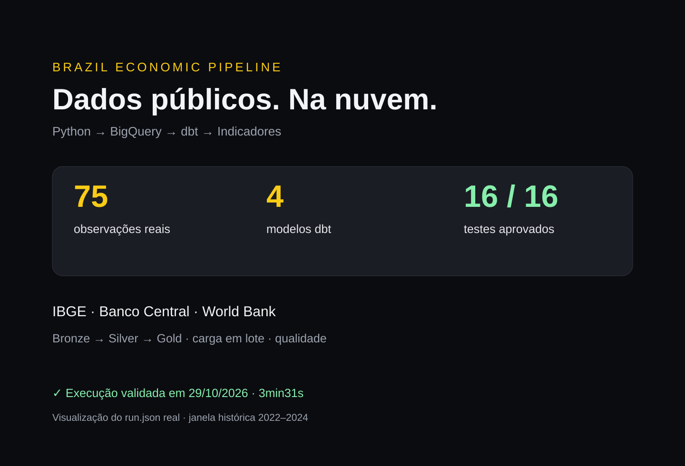

Brazil Economic Pipeline
Das APIs públicas à camada analítica na nuvem: ingestão em Python, armazenamento no BigQuery e transformação com dbt. Um projeto pequeno e reproduzível, com qualidade verificada em uma execução real.
Explorar código no GitHub ↗
Da fonte ao indicador
Uma carga real, com limites claros
Em 29/10/2026, a janela histórica de 2022 a 2024 produziu 36 observações do IPCA, 36 da Selic e três do crescimento anual do PIB. A Selic representa a última observação diária de cada mês; o PIB mantém sua frequência anual.
Os quatro modelos e os 16 testes dbt passaram no BigQuery. Os 20 testes locais e a CI do GitHub também passaram. A duração inclui extração, upload, transformação, documentação e consulta final; é uma execução específica, não um benchmark.
Explorar implementação e decisões técnicas
Partição da carga e janela histórica
Bronze particionada pela data de ingestão, clusterizada por fonte, indicador e data de referência. Isso preserva os períodos históricos diante da expiração de partições do Sandbox.
select observation_key, source, indicator, country, reference_date, value,
frequency, unit, ingested_at, is_synthetic, run_id
from {{ source('bronze', 'observations') }}
where ingestion_date = date('{{ env_var("BQ_SNAPSHOT_DATE", run_started_at.strftime("%Y-%m-%d")) }}')
and reference_date between date('{{ env_var("BQ_START_DATE", "2022-01-01") }}')
and date('{{ env_var("BQ_END_DATE", "2024-12-31") }}')
Qualidade antes da publicação
Dados vazios, duplicados, não finitos ou fontes ausentes interrompem a carga. O modo sintético é explícito e usa datasets separados; falhas das APIs não são substituídas silenciosamente por exemplos.
Operação e escopo
A carga substitui o snapshot Bronze. Não há histórico incremental nem transação global entre upload e dbt. O projeto foi validado com faturamento desativado; os dados têm expiração. A autenticação federada e o agendamento cloud estão preparados no código, mas ainda não foram configurados.
A implementação original Python/SQLite permanece no mesmo repositório como etapa anterior do projeto.